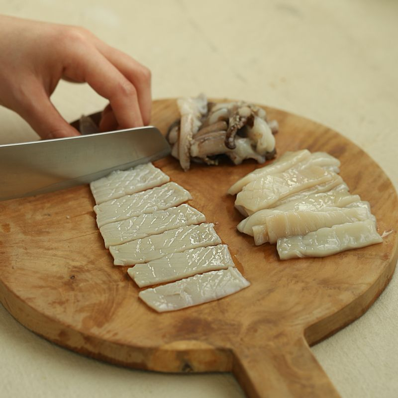

-

오징어는 내장과 껍질을 제거하고 깨끗이 씻어 칼집을 넣고 한입 크기로 잘라주세요.
-
볼에 양념장 재료를 넣고 고루 섞어주세요.
-
양파와 양배추는 채를 썰고 당근과 애호박은 먹기 좋게 편으로 썰어주세요. 풋고추와 홍고추, 대파는 어슷하게 썰어주세요.
-

달군 팬에 약간의 식용유를 두르고 양파와 양배추, 당근을 넣어 볶다가 오징어와 애호박, 양념장을 넣은 후 센 불에서 빠르게 볶아주세요.
-
오징어가 익으면 마지막에 대파와 풋고추, 홍고추를 넣어 볶은 후 참기름을 넣고 마무리해주세요.
-

그릇에 오징어 볶음을 담고 통깨를 뿌려 맛있게 즐겨주세요.
(기호에 따라 밥과 함께 덮밥으로 즐기시거나 소면을 삶아 함께 즐겨 드셔도 좋아요)